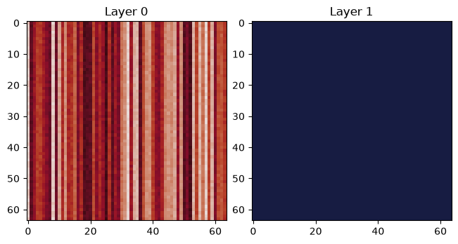
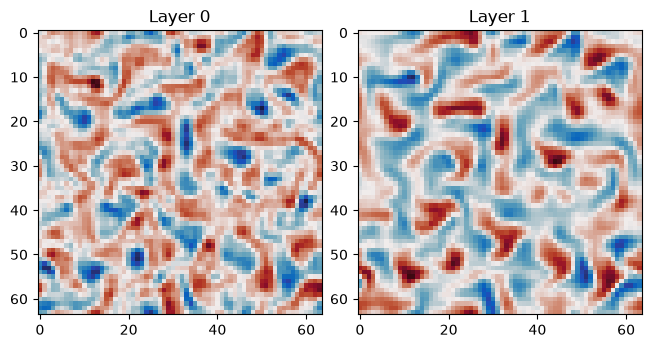

Basic Time Stepping
In this example we demonstrate basic use of this package and how to initialize one of the models and step a simulation through time.
For this example we will run some calculations using float64. We
need to enable JAX’s double precision support. To do this we set an
environment variable before importing anything.
%env JAX_ENABLE_X64=True
env: JAX_ENABLE_X64=True
With that done we can begin by importing JAX, and the pyqg_jax
package.
import operator
import functools
import matplotlib.pyplot as plt
import cmocean.cm as cmo
import jax
import jax.numpy as jnp
import pyqg_jax
Constructing a Model
In an effort to make this package as flexible as possible for use in research projects, there are several components that must be combined to produce a model which is ready for time stepping:
A base model determining the behavior of the simulation
An (optional) parameterization
A time stepper
We will show how to combine these to produce a final
SteppedModel.
First we construct the base model. This includes setting the precision
and shape of the state variables, as well as the physical parameters.
In this example we will be using the QGModel which is a two-layer quasi-geostrophic
model.
base_model = pyqg_jax.qg_model.QGModel(
nx=64,
ny=64,
precision=pyqg_jax.state.Precision.DOUBLE,
)
base_model
QGModel(
nx=64,
ny=64,
L=1000000.0,
W=1000000.0,
rek=5.787e-07,
filterfac=23.6,
f=None,
g=9.81,
beta=1.5e-11,
rd=15000.0,
delta=0.25,
H1=500,
U1=0.025,
U2=0.0,
precision=<Precision.DOUBLE: 2>,
)
Notice how the printed description of the model shows the current
value of all parameters. These values are accessible as attributes on
the base_model object.
In this initial example we will apply a Smagorinsky parameterization, but in
your own use you can skip this step.
param_model = pyqg_jax.parameterizations.smagorinsky.apply_parameterization(
base_model, constant=0.08,
)
Finally, we can combine this model with a time stepper.
# Note that this time step was made larger for demonstration purposes
stepper = pyqg_jax.steppers.AB3Stepper(dt=14400.0)
stepped_model = pyqg_jax.steppers.SteppedModel(
param_model, stepper
)
We can examine the final combined stepped_model object:
stepped_model
SteppedModel(
model=ParameterizedModel(
model=QGModel(
nx=64,
ny=64,
L=1000000.0,
W=1000000.0,
rek=5.787e-07,
filterfac=23.6,
f=None,
g=9.81,
beta=1.5e-11,
rd=15000.0,
delta=0.25,
H1=500,
U1=0.025,
U2=0.0,
precision=<Precision.DOUBLE: 2>,
),
param_func=jax.tree_util.Partial(<function pyqg_jax.parameterizations.smagorinsky.param_func>, constant=0.08),
init_param_aux_func=jax.tree_util.Partial(<function pyqg_jax.parameterizations.smagorinsky.init_param_aux_func>),
),
stepper=AB3Stepper(dt=14400.0),
)
This description is quite long, but it shows all available attributes and how the several components have been nested. If you are unsure of how objects have been combined and need information on how they are nested, printing the objects can provide some guidance.
Initializing States
We can initialize a state directly from the stepped model. Its printed
representation also includes abbreviated information on the shape and
data type of its contents. Consult the documentation on
PseudoSpectralState for
information on additional attributes and properties.
init_state = stepped_model.create_initial_state(
jax.random.key(0)
)
init_state
AB3State(
t=f32[],
tc=u32[],
state=ParameterizedModelState(
model_state=PseudoSpectralState(qh=c128[2,64,33]),
param_aux=NoStepValue(value=None),
),
)
We can plot the initial conditions. Note that these initial states do not resemble the states after several warmup time steps. See below for a sample of a more typical state produced after several time steps.
inner_state = init_state.state.model_state
fig, axs = plt.subplots(1, 2, layout="constrained")
for layer, ax in enumerate(axs):
data = inner_state.q[layer]
vmax = jnp.abs(data).max()
ax.set_title(f"Layer {layer}")
ax.imshow(data, cmap=cmo.balance, vmin=-vmax, vmax=vmax)

This state can now be stepped forward in time to produce a trajectory.
Generating the initial condition uses a jax.random.key() for
random number generation.
Wrapping an External Array
In more advanced use cases you might need to initialize a
PseudoSpectralState from a raw array. The best way to do this is to
obtain a state from the base_model and replace its contents:
# Stand in for an externally-computed value (perhaps from a file)
new_q = jnp.linspace(0, 1, 64 * 64 * 2, dtype=jnp.float64).reshape((2, 64, 64))
# Create a state and perform the replacement
dummy_state = base_model.create_initial_state(jax.random.key(0))
base_state = dummy_state.update(q=new_q)
base_state
PseudoSpectralState(qh=c128[2,64,33])
This produces a new state with the value we provided. However it is not wrapped in for use with the parameterization or the time stepper. We need to pass it up through both of these:
# Skip this next line if you didn't use a parameterization
wrapped_in_param = param_model.initialize_param_state(base_state)
wrapped_in_stepper = stepped_model.initialize_stepper_state(wrapped_in_param)
wrapped_in_stepper
AB3State(
t=f32[],
tc=u32[],
state=ParameterizedModelState(
model_state=PseudoSpectralState(qh=c128[2,64,33]),
param_aux=NoStepValue(value=None),
),
)
Notice how the state is now wrapped just like init_state above.
Consult the documentation for initialize_param_state
initialize_stepper_state for more
information.
Generate Full Trajectories
Now that we have our stepped_model and init_state we can generate
a trajectory by stepping forward in time. The most natural way to do
this is to perform the stepping using jax.lax.scan().
Tip
For long trajectories with many steps you may wish to keep only a
subset or skip a warmup phase. One solution is to use
powerpax.sliced_scan() and set start and step to subsample
the trajectory.
@functools.partial(jax.jit, static_argnames=["num_steps"])
def roll_out_state(state, num_steps):
def loop_fn(carry, _x):
current_state = carry
next_state = stepped_model.step_model(current_state)
# Note: we output the current state for ys
# This includes the starting step in the trajectory
return next_state, current_state
_final_carry, traj_steps = jax.lax.scan(
loop_fn, state, None, length=num_steps
)
return traj_steps
Notice how we had to make num_steps a compile time constant since
this affects the shape of the result. We use jax.jit() here for
the best performance.
With this we can roll out our trajectory for several steps:
traj = roll_out_state(init_state, num_steps=7500)
traj
AB3State(
t=f32[7500],
tc=u32[7500],
state=ParameterizedModelState(
model_state=PseudoSpectralState(qh=c128[7500,2,64,33]),
param_aux=NoStepValue(value=None),
),
)
Notice how all the attributes have a leading dimension of 7500. This
is the time dimension for each array. These are stored in
struct-of-arrays format.
To slice into these, the simplest approach is to use
jax.tree.map() to apply a slice to each element.
jax.tree.map(lambda leaf: leaf[-5:], traj)
AB3State(
t=f32[5],
tc=u32[5],
state=ParameterizedModelState(
model_state=PseudoSpectralState(qh=c128[5,2,64,33]),
param_aux=NoStepValue(value=None),
),
)
or equivalently we can use operator.itemgetter() and
slice.
jax.tree.map(operator.itemgetter(slice(-5, None)), traj)
AB3State(
t=f32[5],
tc=u32[5],
state=ParameterizedModelState(
model_state=PseudoSpectralState(qh=c128[5,2,64,33]),
param_aux=NoStepValue(value=None),
),
)
We can use this approach to visualize the final state:
final_state = jax.tree.map(operator.itemgetter(-1), traj)
final_q = final_state.state.model_state.q
fig, axs = plt.subplots(1, 2, layout="constrained")
for layer, ax in enumerate(axs):
# final_q is now a plain JAX array, we can slice it directly
data = final_q[layer]
vmax = jnp.abs(data).max()
ax.set_title(f"Layer {layer}")
ax.imshow(data, cmap=cmo.balance, vmin=-vmax, vmax=vmax)
